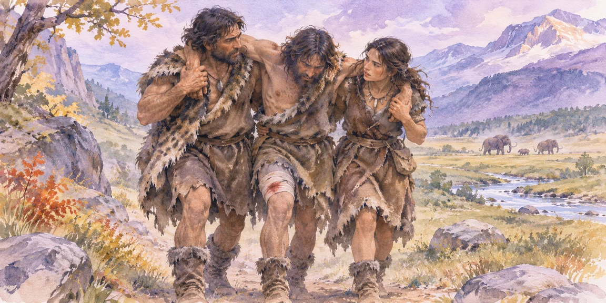
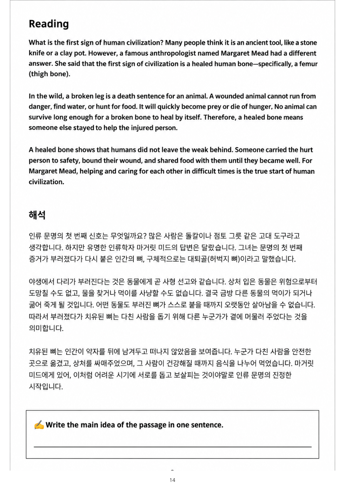

The Real Beginning of Civilization
읽고 · 말하고 · 생각하는 영어

학습 안내
The Real Beginning of Civilization
핵심 단어 · Key Vocabulary
civilization
death sentence
문명
사형 선고
ancient
wounded
고대의
부상을 입은
anthropologist
prey
인류학자
먹이, 사냥감
specifically
survive
구체적으로, 특히
살아남다
femur
injured
대퇴골 (허벅지 뼈)
다친, 부상당한
thigh
bound
허벅지
묶다, (붕대를) 감다
회화 패턴 · Speaking Patterns
1. In my opinion, ...
In my opinion, caring for others is important.
제 생각에는 다른 사람을 돌보는 것이 중요합니다.
2. I agree with the idea that ...
I agree with the idea that kindness makes society better.
친절이 사회를 더 나은 곳으로 만든다는 생각에 동의합니다.
3. From my experience, ...
From my experience, helping others makes us happier.
제 경험에 비추어 보면, 다른 사람을 돕는 것은 우리를 더 행복하게 합니다.
4. I see your point, but I think ...
I see your point, but I think trust is still important.
무슨 말씀인지 알겠습니다만, 제 생각에는 신뢰가 여전히 중요합니다.
5. It depends on the situation.
It depends on the situation. Sometimes we need to ask for help.
상황에 따라 다릅니다. 때로는 도움을 요청해야 합니다.
본문 읽기 · Reading
What is the first sign of human civilization? Many people think it is an ancient tool, like a stone knife or a clay pot. However, a famous anthropologist named Margaret Mead had a different answer. She said that the first sign of civilization is a healed human bone—specifically, a femur (thigh bone).
In the wild, a broken leg is a death sentence for an animal. A wounded animal cannot run from danger, find water, or hunt for food. It will quickly become prey or die of hunger. No animal can survive long enough for a broken bone to heal by itself. Therefore, a healed bone means someone else stayed to help the injured person.
A healed bone shows that humans did not leave the weak behind. Someone carried the hurt person to safety, bound their wound, and shared food with them until they became well. For Margaret Mead, helping and caring for each other in difficult times is the true start of human civilization.
한국어 해석 · Translation
인류 문명의 첫 번째 신호는 무엇일까요? 많은 사람은 돌칼이나 점토 그릇 같은 고대 도구라고 생각합니다. 하지만 유명한 인류학자 마거릿 미드의 답변은 달랐습니다. 그녀는 문명의 첫 번째 증거가 부러졌다가 다시 붙은 인간의 뼈, 구체적으로는 대퇴골(허벅지 뼈)이라고 말했습니다.
야생에서 다리가 부러진다는 것은 동물에게 곧 사형 선고와 같습니다. 상처 입은 동물은 위험으로부터 도망칠 수도 없고, 물을 찾거나 먹이를 사냥할 수도 없습니다. 결국 금방 다른 동물의 먹이가 되거나 굶어 죽게 될 것입니다. 어떤 동물도 부러진 뼈가 스스로 붙을 때까지 오랫동안 살아남을 수 없습니다. 따라서 부러졌다가 치유된 뼈는 다친 사람을 돕기 위해 다른 누군가가 곁에 머물러 주었다는 것을 의미합니다.
치유된 뼈는 인간이 약자를 뒤에 남겨두고 떠나지 않았음을 보여줍니다. 누군가 다친 사람을 안전한 곳으로 옮겼고, 상처를 싸매주었으며, 그 사람이 건강해질 때까지 음식을 나누어 먹었습니다. 마거릿 미드에게 있어, 이처럼 어려운 시기에 서로를 돕고 보살피는 것이야말로 인류 문명의 진정한 시작입니다.
토론 질문 · Discussion Questions
What did you think was the first sign of civilization before reading this?
이 글을 읽기 전에는 문명의 첫 번째 신호가 무엇이라고 생각하셨나요?
Do you agree with Margaret Mead's definition of civilization? Why or why not?
마거릿 미드가 내린 문명의 정의에 동의하시나요? 왜 그렇게 생각하시나요?
Can you think of a time when someone helped you when you were in trouble?
당신이 어려움에 처했을 때 누군가 도움을 주었던 기억이 있나요?
Why is it sometimes difficult to help others in modern society?
현대 사회에서 다른 사람을 돕는 것이 때로는 왜 어렵게 느껴질까요?
예시 답변 · Sample Answers
I thought the first sign of civilization was farming or writing. Before reading this, I believed that growing food together or leaving records was the real start of human society.
저는 문명의 첫 번째 신호가 농경이나 문자라고 생각했습니다. 이 글을 읽기 전에는 함께 식량을 기르거나 기록을 남기는 것이 인간 사회의 진정한 시작이라고 믿었습니다.
I completely agree with her definition. Making tools is just about survival, but taking care of a wounded person shows empathy and love. That is what truly separates humans from animals.
저는 그녀의 정의에 전적으로 동의합니다. 도구를 만드는 것은 단지 생존에 관한 것이지만, 상처 입은 사람을 돌보는 것은 공감과 사랑을 보여줍니다. 그것이 인간을 동물과 진정으로 구별해 주는 것입니다.
Yes, I can. A few years ago, I hurt my ankle at the subway station. I couldn't walk, but a stranger stopped and helped me sit down, and even brought me a bottle of water. I still feel grateful when I think about it.
네, 기억납니다. 몇 년 전에 지하철역에서 발목을 다친 적이 있습니다. 걸을 수가 없었는데, 한 행인이 가던 길을 멈추고 제가 앉을 수 있게 도와주었으며, 심지어 물 한 병을 가져다주었습니다. 지금도 그 생각을 하면 감사한 마음이 듭니다.
In modern society, people are often too busy with their own lives. Also, many people live alone, and there is a lack of trust between strangers. Sometimes, people are afraid that helping others might cause trouble for themselves.
현대 사회에서 사람들은 종종 자신의 삶만으로도 너무 바쁩니다. 또한 많은 사람이 혼자 살아가고, 낯선 사람 사이의 신뢰가 부족합니다. 때로는 남을 돕는 것이 자신에게 골칫거리를 가져다줄까 봐 두려워하기도 합니다.
오늘의 메시지 · Today’s Message
"A caring heart is the foundation of every great society."
(배려하는 마음은 모든 위대한 사회의 기초이다.)
영작 연습 · Write It Yourself
1. Survive
2. Injured
Write the main idea of the passage in one sentence.
원본 스캔
PDF 17쪽 원본 보기
